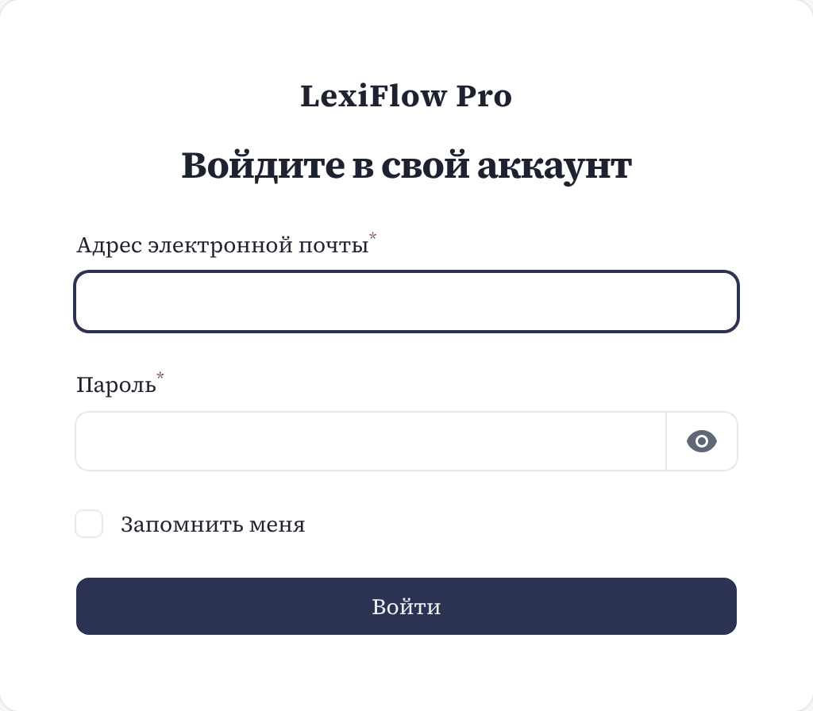
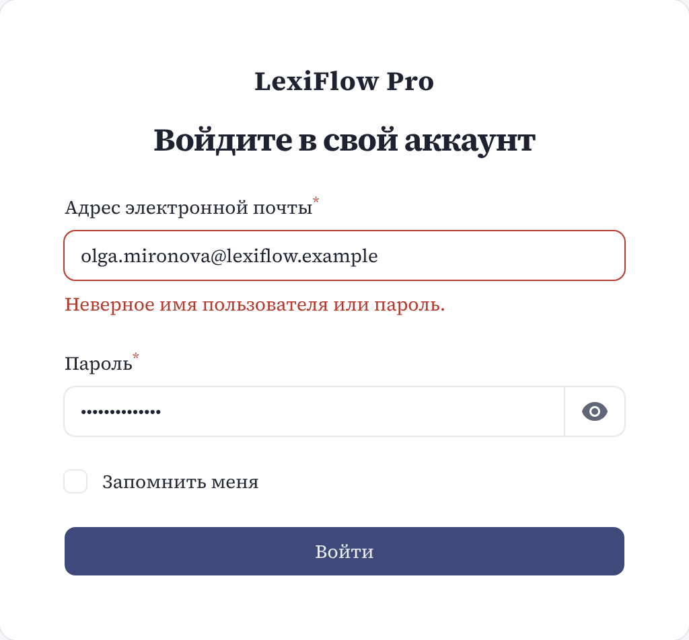
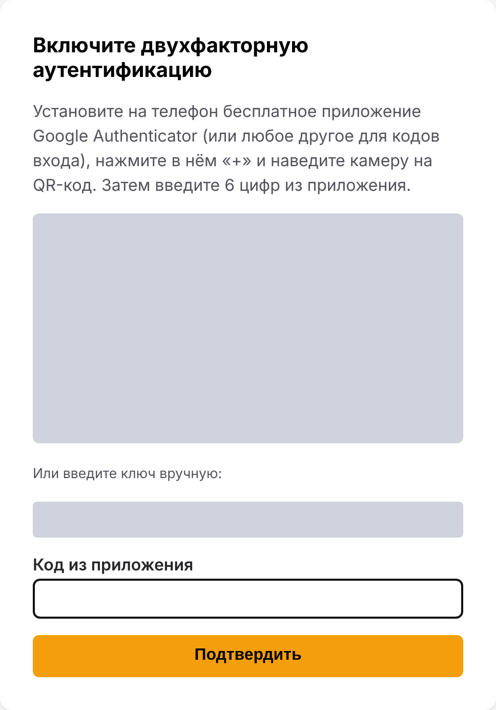
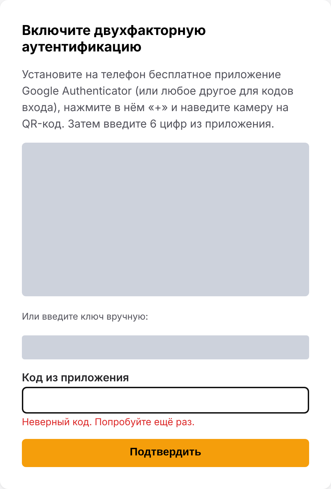
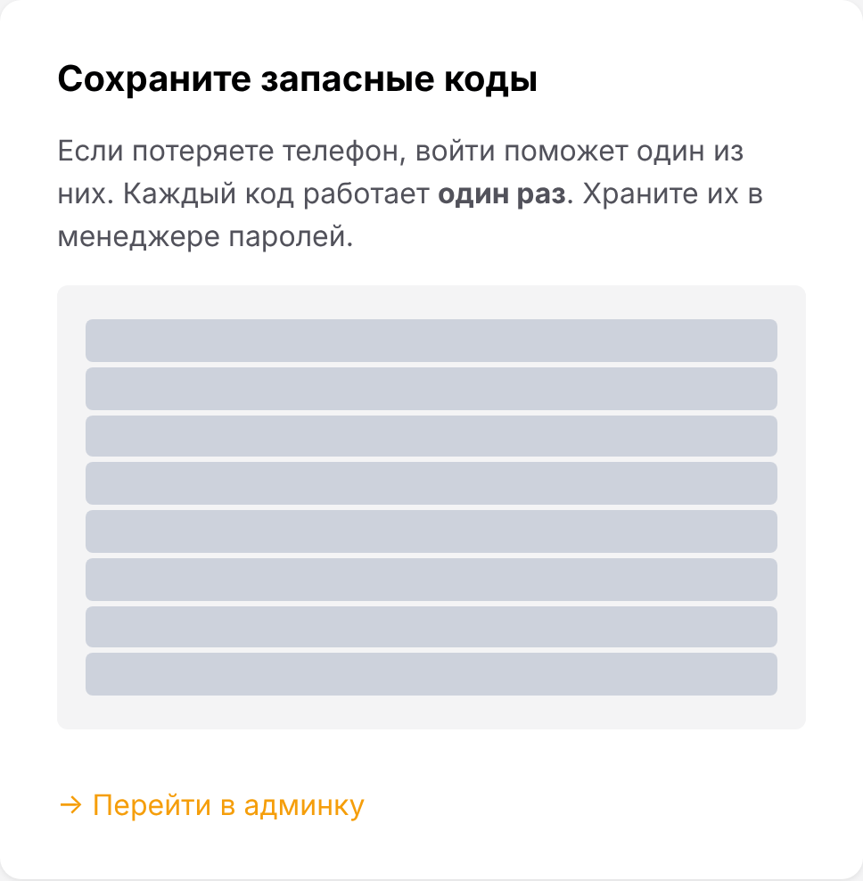
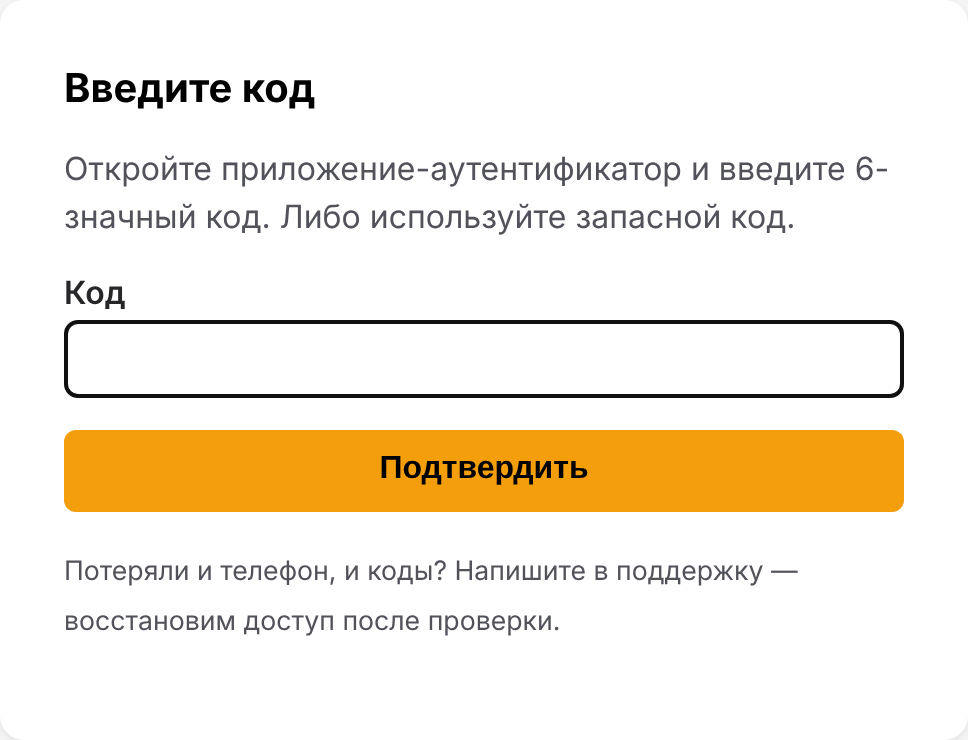
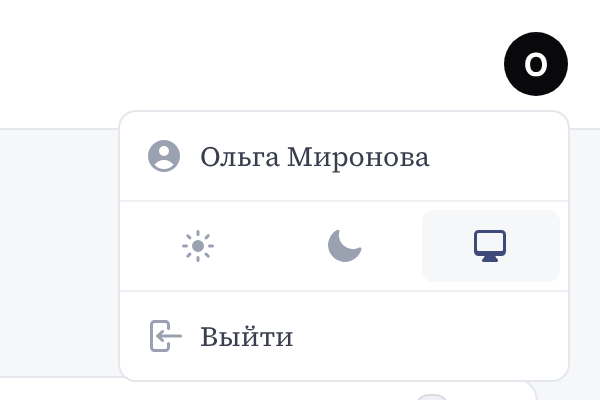

В панель /admin входят по адресу электронной почты и паролю. Администратор, кроме того, каждый раз вводит шестизначный код из приложения-аутентификатора на телефоне. Учителю код не нужен.
Вход
Откройте в браузере адрес платформы с /admin на конце, например https://<адрес платформы>/admin.
Введите Адрес электронной почты и Пароль. Кнопка с глазом справа показывает введённый пароль.
Отметьте Запомнить меня, если работаете на своём компьютере: браузер не будет спрашивать пароль после закрытия. На чужом компьютере флажок не ставьте.
Нажмите Войти. Учитель сразу попадает на главную панель, администратор — на страницу кода (ниже).

Рис. Страница входа в панель администратора.
Если почта или пароль не подходят, под полем почты появится «Неверное имя пользователя или пароль.».

Рис. Ошибка входа. Такое же сообщение видит сотрудник, у которого снят флажок «Активен», — панель не сообщает, что учётная запись отключена.
Ссылки «Забыли пароль?» в панели администратора нет, и своего профиля для смены пароля тоже нет. Пароль меняет другой администратор в разделе Сотрудники (глава «Сотрудники и роли»). Если вы единственный администратор и забыли пароль, восстановить доступ может только технический администратор сервера.
Двухфакторная защита: первое включение
Для роли Администратор двухфакторная защита обязательна. При первом входе панель откроет страницу «Включите двухфакторную аутентификацию» и не пустит дальше, пока защита не включена.
Установите на телефон бесплатное приложение для кодов входа: Google Authenticator, Microsoft Authenticator или любое другое, которое показывает шестизначные коды.
В приложении нажмите «+» и наведите камеру на QR-код на экране. Если камеры нет, выберите в приложении ручной ввод и наберите ключ из строки «Или введите ключ вручную».
Приложение начнёт показывать код из 6 цифр, который меняется каждые 30 секунд. Введите текущий код в поле Код из приложения и нажмите Подтвердить.
Откроется страница «Сохраните запасные коды». Перепишите или сохраните восемь кодов в менеджер паролей и только после этого нажмите → Перейти в админку.

Рис. Включение двухфакторной защиты. QR-код и ключ на снимке закрашены: это секрет, который нельзя никому показывать.

Рис. Код не подошёл: «Неверный код. Попробуйте ещё раз.». Проверьте, что вводите код этого аккаунта и что время на телефоне выставлено автоматически.

Рис. Запасные коды (на снимке закрашены). Каждый работает один раз. Страница показывается один раз — сразу после включения защиты.
Запасные коды — единственный способ войти без телефона. Не храните их на том же телефоне, где стоит приложение-аутентификатор, и не пересылайте в мессенджерах.
Вход с кодом
При каждом следующем входе после пароля откроется страница «Введите код».
Откройте приложение-аутентификатор и найдите строку с названием платформы и вашей почтой.
Введите текущий шестизначный код в поле Код и нажмите Подтвердить.
Если телефона нет под рукой, введите вместо кода один из запасных кодов. Использованный запасной код больше не сработает.

Рис. Ввод кода при входе. Сюда же можно ввести запасной код.
После пяти неверных кодов подряд панель на минуту перестаёт принимать попытки и пишет «Слишком много попыток. Повторите через N с.». Подождите указанное время. Ограничение действует и по часам: не больше двадцати попыток в час на одну учётную запись.
Если потерян телефон
Есть запасные коды — войдите с одним из них. Затем попросите технического администратора сбросить защиту, чтобы подключить новый телефон: в самой панели кнопки «сбросить двухфакторную защиту» нет.
Нет ни телефона, ни кодов — восстановить доступ может только технический администратор сервера (приложение «Для технического администратора»). После сброса при следующем входе снова откроется страница включения защиты.
Меню пользователя и выход
Кружок с первой буквой имени в правом верхнем углу открывает меню пользователя: ваше имя, переключатель оформления (светлое, тёмное, как в системе) и пункт Выйти.

Рис. Меню пользователя: имя, три кнопки оформления и «Выйти».
Всегда нажимайте Выйти, если работали на чужом или общем компьютере. Простое закрытие вкладки не завершает сеанс.
Правила безопасности учётной записи
Одна учётная запись — один человек. Не передавайте пароль коллегам: заведите им свои записи в разделе Сотрудники.
Когда сотрудник уходит, снимите у него флажок Активен или удалите запись. Неактивный сотрудник не войдёт, а открытый у него сеанс перестанет пускать в панель при следующем действии.
Выдавайте роль Администратор только тем, кому нужен доступ к деньгам и данным всех учеников. Учителю достаточно роли Учитель.
Пароль — не короче 8 символов; лучше длинная фраза из менеджера паролей.